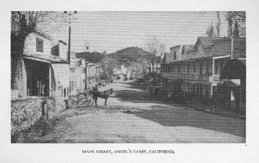

Angel's Camp, California
1865
"It was a driving, vigorous, restless population in those days. It was a curious population. It was the only
population of the kind that the world has ever seen gathered together, and its not likely that
the world will ever see its like again." Mark Twain, Roughing It
Main Street

picture courtesy of Mark Twain's Western Years


Back to San Francisco | On to Quaker City


picture courtesy of Mark Twain's Western Years
"Jackass
Gulch [Angel's Camp] had once
been a rich and thriving surface-mining
camp. By and by its gold deposits
were exhausted; then the people began to go away and the town began to decay, and rapidly; in my time it had
disappeared. Where the bank and the city hall and the church and the gambling dens and the newspaper office and
the streets of brick blocks had been, was nothing now but a wide and beautiful expanse of green grass, a peaceful
and charming solitude. Half a dozen scattered dwellings were still inhabited and there was still one saloon of a ruined
and rickity character struggling to life, but doomed." Autobiography, 146-147
were exhausted; then the people began to go away and the town began to decay, and rapidly; in my time it had
disappeared. Where the bank and the city hall and the church and the gambling dens and the newspaper office and
the streets of brick blocks had been, was nothing now but a wide and beautiful expanse of green grass, a peaceful
and charming solitude. Half a dozen scattered dwellings were still inhabited and there was still one saloon of a ruined
and rickity character struggling to life, but doomed." Autobiography, 146-147
Back to San Francisco | On to Quaker City